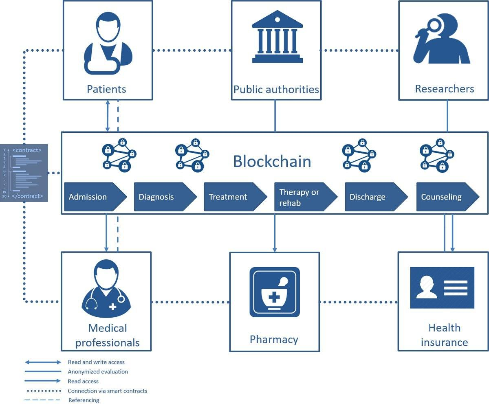

Surat keterangan sehat bebas virus Corona (COVID-19) diperjualbelikan di lapak online. Teknologi blockchain disebut bisa jadi solusi tepat.
Hal itu disampaikan oleh Damos Hanggara, Pendiri dan CEO Trusti asal Yogyakarta, Jumat (15 Mei 2020).
Dilansir dari Detik, surat keterangan sehat itu dibutuhkan sebagai salah satu persyaratan perjalanan orang yang bekerja pada lembaga pemerintah atau swasta.
Jika ingin bepergian untuk bekerja, maka setiap orang harus menunjukkan hasil negatif berdasarkan PCR Test/Rapid Test atau surat keterangan sehat dari dinas kesehatan/rumah sakit/puskesmas/klinik kesehatan. Hal itu berdasarkan Surat Edaran yang dikeluarkan Gugus Tugas Percepatan Penanganan COVID-19 No. 4 Tahun 2020.
“Indonesia memang selalu lengah dan alfa dengan keakuratan dan validitas data-data penting. Surat bebas COVID-19 palsu adalah buktinya. Padahal ada teknologi blockchain yang bisa jadi solusi agar surat itu terbukti akurat. Patut kita ingat bersama, bahwa sesuatu yang melibatkan banyak pihak dalam setiap prosesnya, memang dibutuhkan transparansi,” kata Damos kepada Blockchainmedia.
 Skema manajemen digital berbasis teknologi blockchain. Sumber: Trusti.Dia mencontohkan skemanya seperti ini. Surat versi tercetak (printed) yang sudah dipindai menjadi sebuah file gambar disimpan terlebih dahulu ke IPFS (Interplanetary File System). Lalu data simpanan itu, berupa data hash, lantas disimpan ke dalam blockchain.